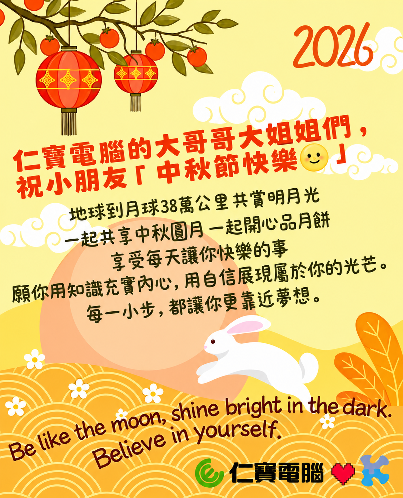

第一年仁寶「中秋送月餅 公益不能停」活動舉辦在 2021 年新冠疫情期間。防疫時期的居家辦公，讓人與人之間無法面對面的互動交流，同樣也影響很多庇護工場、弱勢團體的生計。原本肯納青年定期在仁寶大樓、陽光大樓的賣饅頭或年節商品的活動，也因疫情而取消！
就在這一年，仁寶開始邀請同仁們一起愛心參與「中秋送月餅 公益𣎴能停」活動，讓許潮英基金會長期照顧的弱勢學童能收到來自仁寶大哥哥大姐姐們的祝福，即使居家上課學習，也能收到來自遠方的關懷、開心收到中秋小月餅，和家人一起賞月同享。
六年來仁寶同仁們持續支持肯納園自閉症基金會庇護自閉症青年的自給自足的道路，來自大家 1 盒、2 盒、3 盒、4 盒、……、100 盒的購買肯納園月餅或禮盒。每一年讓很多很多的愛心在人與人、心與心之間善意流轉 。無言的關懷，給予很多需要的孩子們實質鼓勵和溫柔心靈力量，也提升肯納青年自信與肯定工作價值，雙重公益模式推動社會互助、共融和諧。
謝謝有您一起，期待您也同樣感受到中秋溫馨喜悅。
仁寶愛心伙伴一起保護弱勢孩子們，即使不知道他們實際在臺灣生活與學習的地區、他們的姓名與相貌，謝謝六年來，大家仍願意力所能任的去分享愛。
2021 第一年 募集 1,140 位同仁愛心捐贈 2,244 盒月餅
2022 第二年 募集 839 位同仁愛心捐贈 3,118 盒月餅
2023 第三年 募集 868 位同仁愛心捐贈 3,448 盒月餅
2024 第四年 募集 1,038 位同仁愛心捐贈 4,292 盒月餅
2025 第五年 募集 982 位同仁愛心捐贈 4,346 盒月餅
2026 第六年 募集 983 位同仁愛心捐贈 4,725 盒月餅
2025 年 10 月 1 日，仁寶第一批志工到肯納園幫忙月餅裝箱。2026 年 9 月 21 日 仁寶志工第二年去協助肯納青年，一起把大家的中秋祝福裝箱，在 9/25 中秋節前分送到全台孩子們手上。
除了許潮英慈善基金會長期照護的學童、仁寶x輔大偏鄉關懷中心｢袋鼠計劃」實體端點的孩子們，今年還有安德啟智│怡峰園的老憨兒們，都會收到來自仁寶愛心伙伴們的中秋祝福。
這不是說個故事，而是我們一起實際在做的事。
 |
除了「中秋送月餅 公益不能停」活動，仁寶電腦每一位同仁伙伴在ESG各面向的工作實踐力都記錄在 2026 年 8 月 18 日出刊的【仁寶2025永續報告書】。
這是仁寶第 16 本永續報告書，也是每一年每一位仁寶人在工作與公益付出上共同累積的努力與成果。
想閱讀更多關於 ESG 團隊的資訊，歡迎參考：
• 永續報告書 Sustainability Report
• 更多仁寶 ESG 資訊 More Compal ESG Information
• 仁寶 ESG Fackbook 粉絲團 Compal ESG Facebook Fan Page
• 仁寶【仁芯綠動】公益平台: https://welfare.compal.com/promo/index